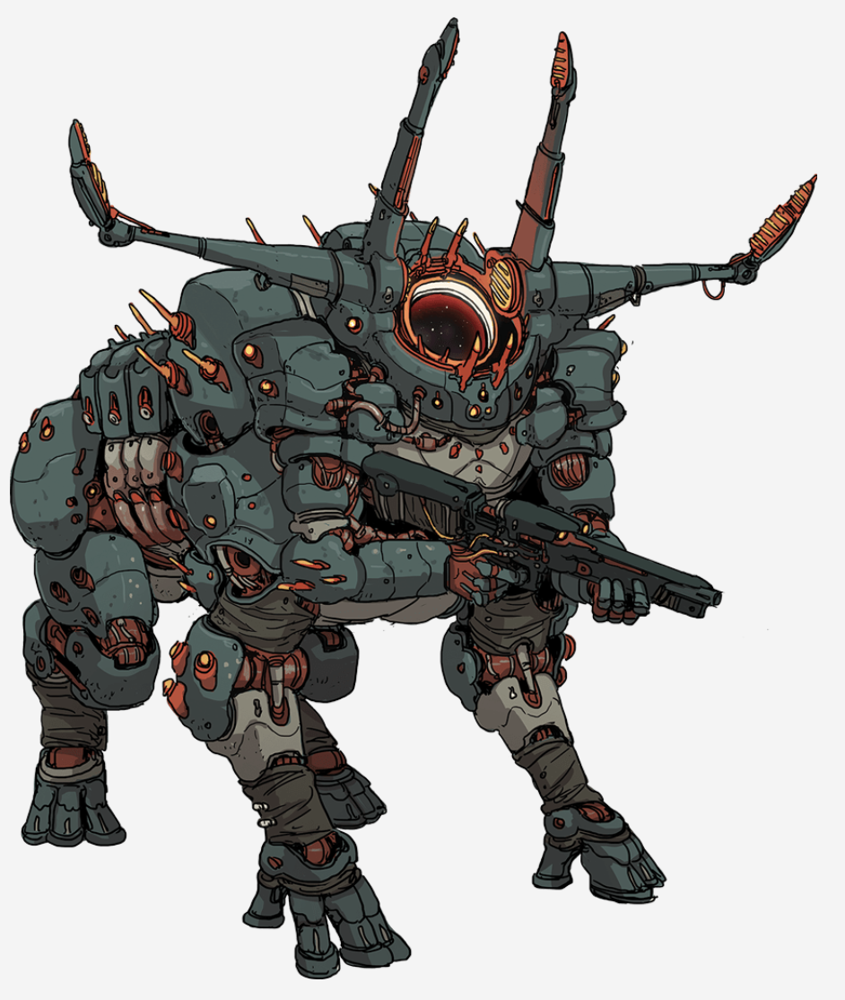

Bethany¶
- Bethany goes to the archive. The bio scans immediately recognize her as a lancer of Squad Lycaon. She is looking for information on Anathema (and Em is looking for Amaq to be a creep)
- The desk attendant asks how she can help
- Bethany asks for records that are kept offline for security purposes
- There is a backup file wing deeper in the archive.
- The attendant looks off into the distance for a moment, then informs Bethany that a request was sent for backup access to Seline.
- It was immediately accepted
- She uploads the directions to Bethany
- Bethany follows the direction through the server racks. It is freezing, with a dull humming sound all around.
- There is a security door that opens for her into a smaller room
- An interface terminal has a spot to connect with a datapad.
- Bethany searches for descriptions matching Anathema and her mech, Burning Miseries.
- There are pings for Anathema, Humble Invention, and Brooding Wings, assigned to the lancer group Halcyon Crypt.
- Gil comes from the Reconciliation Project
- The Crimson Wolves keep a compendium of mech frames and pilots. A bestiary essentially, containing information of enemies they could face, weaknesses.
- Bethany can see files, but does not have access to view some. Specifically, HORUS frames.
- Bethany being brought up as an elite lancer her whole life, knows of HORUS, that you do not seek Horus, they find you.
- The Crimson Wolves files on Horus frames are restricted as trade secrets.
- But bio-organic integration with mechs seems to be very rare. There are a couple case studies of incorporating a bioweapon, but it is all synthetic and cosmetic as an intimidation technique.
- There are encrypted forms of the Horus files on the Gatarobi network.
- After about half an hour of reading, Bethany is winding down before realizing there is someone next to her.
- Leaning against the terminal, is Amaq.
- Bethany says they aren't suppose to lean on it
- "....Fair point."
- Amaq questions what Bethany is looking for in the archives.
- How aware is Amaq of our last lancer contact?
- They have read the files. We fought militia. Nothing too out of the ordinary except for a lancer. They pause. "Purposeful bio-integration into mech systems is pretty rare isn't it?" Only one case in the Crimson Wolves records apart from Anathema, who put flesh sheets on their cannon.
- What are the odds a back alley lancer program could get three lancers up and running on bio-integration.
- "Statistically, they would have to run through at least a hundred or so failures."
- Bethany believes they have to have left a footprint somewhere to get clues. Records of their activities, swaths of death, etc.
- Amaq suggests Bethany is maybe looking in the wrong place, but does not really know where the right place is.
- Maybe you already have the files, but not the access
- Bethany asks where to go to become a lancer off the record?
- Is there a dark web?
- Amaq says there are plenty. But how would you get in the programs?
- Find yourself into a random chop shop in the middle of nowhere and get hacked into shape. Best outcome is being a functional lancer. Barring that, hope for a quiet death.
- There are governments that may have their own in house programs that might not register in the Wolves databases.
- The people would need the resources to get help without having to ask for it.
- Amaq appears to straddle between smug and aloof. An impressive combination of body language and expression.
- Amaq is incredibly hard to read. Bethany gets the idea that she can't tell if Amaq is keeping something from her, but Amaq is more interesting in the process of how she figures things out.
- Interesting that the Crimson Wolves also hired a chop shop nobody lancer, like the three that Halcyon Crypt have.
- Amaq cracks a smile.
- Amaq asks if they gave Bethany the name of their program
- Bethany searches the database for the Reconciliation Project
- At first, there are no results
- After changing some indexes, she is brought back to the secured Horus files, which cannot be accessed.
- "That doesn't bode well"
- Amaq looks over Bethany's shoulder and tilts their head. For a split second, almost unnoticeable, Amaq looks quizzical. Like they don't know something for once.
- They apologize for looking over Bethany's shoulder, saying the Reconciliation Project seems ominous.
- Either Ms. Nguyen is better at hiding information that Amaq thought, or no one in the Crimson Wolves has heard that name for where Gil came from.
- Amaq wishes Bethany luck in their sleuthing and leaves, saying they will meet again.
PARTY TIME¶
-
Gil brings in a bunch of kegs into the Lycaon suite common area.
- That is the extent of the party prep.
- Gil is very touchy about the aux, and also have the lights all on in their normal color
- GIl is wearing a tank top and boxers.
-
Koa is the first guest to enter. She smells slightly of bourbon already.
- Koa is wearing a tank top with her bomber jacket and jeans
- Citra and Bulan are with her. Koa comes in and hugs Gil, holding 6 6-packs of beer in each hand. She throws her arms up in the air, yelling "Kia ora!", giving everyone hugs.
- One twin is wearing a crop top, hoodie, and sweatpants.
- Other is wearing a big fluffy sweater and a mini skirt with fishnets.
- She mentioned Bunny texted her to bring cups.
- Koa seems to be in a good mood, so Gil thinks their standoffish nature will not last long.
- Gil asks Koa to hold her legs for a keg stand.
- Koa tells Bunny that there are cups for the squad in the kitchen
- One of the twins (no idea which) walks up to Bunny and guides her to the kitchen to look for cups.
- Gil goes for a kegstand, trying to show off to Koa.
- It was an average kegstand. Not impressive, but not bad.
- Koa is not freaked, but she is cheering Gil on.
- Bunny and the twin find cups.
- The lancer tells Bunny we can request remodeling if we need things shifted around or want specific furniture.
- Bunny says she has always wanted a beanbag chair, which the lancer says there should not be any problem with that.
- The buzzer for our suite goes off. Gil answers.
- There are five people at the door, mostly wearing sleek, streamlined black slacks and suits. Squad Ligoni.
- The leader of the group holds out a bottle with a Russian label. "You must be Gil."
- The man cracks a smile at Gil's lackadaisical and friendly demenaor, nodding to his squadmates. The big guy starts to go talk to Koa.
- "It has been a while since something brought this many of us together."
- The man welcomes us (Lycaon) to the Wolves since there was not a chance to earlier.
- Gil gets a little uncomfortable and shifty at the mention.
- Gil dares Dom to smoke an entire pack of cigarettes.
- Dom casually smokes it all, not missing a beat.
- Bunny is enamored by the spread of alcohol in front of her and decides she wants to take a shot.
- She shoots some vodka, and it is a massive burn. It tastes like fire to her. Hits her like a truck. A little bit of a buzz, and it wanes.
- Bunny shoots again, a bit harder this time.
- Bunny shoots a third. She is definitely drunk, but she does not quite realize it yet. It will take a moment to fully hit.
- Bunny decides to take a break. Not because she feels she shouldn't continue, but because she is in pain from the burn.
- Dom meets with Lane from Ligoni. He asks if Amaq is coming. Lane does not know who he is talking about.
- Lane imagines Dom made friends with one of the resident spooks
- Esther replies "Godspeed."
- Ligoni saw some of our last mission. Things went as well as they could, given the circumstances.
- Dom goes on talking about stealing a guy's skin on Cressidium.
- Lane says its quite common to impersonate people on infiltration. Does not realize Dom is talking literally stealing skin at first.
- One of Ligoni cracks into the blue bottle they brought. One of the Ligoni calls it "Coolant". Tastes like blue raspberry, burns like fire.
- Bethany is people-watching with a grimace.
- Vasily and Bishop whip out some playing cards.
- Yuri checks in on Barinov, talking quietly.
- Bethany approaches Yuri ("Tsar") and Barinov.
- Koa tosses her jacket to one of the twins and clears off a table.
- Barinov "Well, there they go."
- Duke puts a massive arm on the table, and begins to arm wrestle Koa
- Bethany asks if parties like this are common on base. Yuri says they are not, but it is nice to spend some time with the other squads.
- Bethany introduces herself to Tsar. He says our squad is "interesting"
- Usually, the Wolves themselves don't scout lancers. They scout handlers, and the handler builds the team. The rest falls into place.
- Tsar talks about his handler, Elizabeth Sharp.
- Former Union lancer.
- Treats Ligoni like Union special forces.
- Very by the book, no nonsense. But obvious she cares.
- "It is good to trust your handler with your life, in one way or another."
- Sharp does not pilot ever since leaving the Union military
- Better job and life security in her current work.
- Gil goes over to Bethany to bother her.
- Barinov leans in and says "Six drinks until Lane starts flirting with Citra. 10 before she makes out with Bishop."
- Tsar guesses 18 instead of 10.
- Gil comes across a little more hostile than intended. "I saw you" at Tsar
- I saw you talking about work!
- Gil is annoyed by it and asks if they have any hobbies.
- Tsar responds "Obvious. I tend a small garden. Barinov writes."
- Gil asks how the garden is going.
- Tsar is hybridizing peppers currently.
- Tsar pulls out his tablet and shows Gil the garden and hydroponic techniques.
- They ask about Gil's hobbies.
- Gil points around at everything. They surmise she means partying.
- Bethany asks if Gil is alright. She looks annoyed at the question. Right now, we're all hanging out and it's nice. This guy grows peppers and it's awesome.
- Tsar recommends Gil try some of Duke's Coolant.
- Gil tries to mix vodka and Coolant. The Coolant is strong. Not sure what Duke did to it, but it is something strong. Gil is tipsy.
- Bunny hears the slam of Koa winning against Duke.
- Koa jeers at Duke after Duke asks if they are tied now.
- Koa calls Bunny over. Bunny wordlessly stumbles to the table, slamming her elbow down to challenge Koa.
- Duke: "The student looks to become the master."
- Koa and Bunny lock arms and go at it.
- The world spins as Bunny's reaciton time is delayed so much that when Duke yells go, there's a full second before the words register. Bunny's hand is already slammed on the table.
- Koa yells out "Boom!"
- Koa: "Now Bunny I've sparred with you a few times. How you feeling?"
- Bunny very drunkenly slurs her words, saying "Next time, I'll get you."
- Koa gets another drink for Bunny telling her to have more.
- It is another cup of what seems to be vodka. "Just keep drinking. When you see me again, I'll give you some more of that."
- (It's water)
- Bunny walks over to her door with her "vodka", slumping against the wall and quietly sipping.
- Someone has taken over the lights. There are some more people filtering in. They are mixing in pretty well, mingling with others.
- Dom and Lane decide to start playing some music. Dom plays bass and Lane uses a guitar. They jam for a little while to the music above. Dom then hears a third eerie-sounding instrument behind him.
- After the song, a voice says "Good jam session everyone. It's been a while."
- Amaq is sitting behind Dom with a stylophone.
- Dom carefully puts his bass down and welcomes Amaq.
- They are already holding a glass of Coolant and takes a sip.
- Lane questions who this person is. Dom introduces Amaq, who compliments Lane about their last sortie's specifics. Lane is slightly taken aback by it.
- Bishop grabs Lane and pulls her to the dance floor.
-
Amaq comments that everyone seems to be getting together quite well, impressed that Lycaon got both Kalak and Ligoni to show up.
- They try to make some small talk with Dom.
- Dom is suspicious that there is something bigger that Amaq wants to talk about
- "Must we always have big talk every time we meet?"
- Amaq doesn't get to parties often, or at least does not participate in them. A bit out of place here.
-
Bunny makes her way to the dance floor, and just does what she thinks might look good.
- Barinov was right on the money that Lane would flirt with Citra at 6 drinks. She shyly backs away after a while. Closer to 18, Lane was pinning Bishop to the wall and kissing her.
-
Bethany asks Barinov to try to read her if he's so good at it.
- Barinov knows of Bethany's past at Sinclair Biomed. That she is wondering what any of this has to do with being better at her job.
- The answer? Nothing, and everything.
- Nothing, because it does not help strategize. But everything, because these moments of escape let you play at being a person for a bit.
- When asked what he means, he pauses and drinks. Everything else outside of this and training is trudging through various stages of hell. No one who is well put together won't and shouldn't do that. So these moments help us not absolutely lose it.
- Bethany asks if Barinov wants to come to their room. He accepts.
- Barinov knows of Bethany's past at Sinclair Biomed. That she is wondering what any of this has to do with being better at her job.
-
Bunny gets sad and sends a very sloppily-typed message to Seline, wondering if she's coming to the party. Koa comes over and dances with Bunny, cheering her on.
- Bunny gets a ping back, Seline saying it seems like she is having a good time. She apologizes that it is not her place to crash in. Later without a reply from Bunny, she asks if Bunny is ok.
- Koa gives Bunny more water. At one point, Bunny vaguely recalls Duke and Koa with their arms all together with Bunny belting out a pub song.
-
During the dancing, Bunny blacks out and falls. Koa catches her.
- Duke tells Koa she should not have given me that much to drink. To which she responds it is water.
- Koa grabs Bunny's datapad and cradles Bunny in her arms. She sends a message while carrying Bunny.
- Gil follows Koa and draws on Bunny's unconscious face.
- Koa gives Gil a thumbs up, then kisses Bunny's forehead. "Good job tonight, my protégé".
- There is a ping on Bunny's datapad.
-
Amaq and Dom are talking.
- Amaq mentions best date idea. There's a theater that shows indie Welsh documentaries.
- Amaq pauses for a bit. "How's the acoustics in your room?"
- They both go to Dom's room.
-
Gil is throwing up, Duke patting her back.
- Gil decides to leave the room after collecting herself.
- She stumbles down the hallway to the sim room, hoping to throw up on the console.
- Gil fails, falling down and passing out in a hallway with some vomit around her.
Waking up¶
- Dom wakes up after a night of...something. Amaq is not there. Why would they be?
- There is a bottle of water on his nightstand, with a note.
- "Had to blast. Great time last night!"
- Bethany gets up around the same time Barinov is leaving her room. He stretches and says it's time for breakfast.
- Barinov asks if Bethany wants to go with or split?
- They go to the cafeteria together.
- The suite is a wreck as they leave. There's some lost articles of clothing. Gil is thrown onto the couch, with drawings on her face.
- Gil is shirtless and Ligoni each signed their names on her abdomen
- This is how Gil wakes up, with vomit on the floor.
- Gil wakes up and pours a bottle of water on herself. She checks our schedule, and the scheduled training and dietary checks have been cleared for today.
- There are notes to try some warmup training if we can.
- Gil checks to see if the night is available, and request more kegs.
-
Bunny wakes up to a clacking noise, typing coming from nearby. She feels warm and comfortable. She stirs, and sees blue light. She looks, and dead ahead there is a wall of an aquarium. There is a beautiful rainbow of fish in the tank, very well maintained. Bunny is laying on a couch, with a blanket thrown over her.
- There is a desk, and underneath it, she sees a really nice pair of shoes and tights. Seline is on her computer typing.
- Bunny quickly tries to sit up, but her head hurts too much and she compromises by propping herself up on her elbow. She wonders what happened and how she got here. Koa messaged Seline from Bunny's datapad after she blacked out, and Seline instructed Koa to bring Bunny to her office to be watched over. Seline mentions there is a jelly drink and vitamins on the table nearby. She used to live on those between sorties, you know?
- No. "Oh...fair enough."
- She finishes what she is typing and stands up. She pulls a cloth out of her suit and places a finger on Bunny's chin. Seline says "Up," and Bunny tilts her chin up as Seline begins wiping the marker off her cheek. Bunny is stunned at the command and how unfazed she was following it without a second thought, her mouth agape and staring into Seline's eyes as Seline wipes off her cheek.
- Seline smiles and tosses the cloth aside. She tells Bunny to get some rest and sleep more if needed. She's going to be working on her computer.
- Bunny tries to quickly get her stuff together and rush off to training, before Seline mentions having cleared their schedule for the day. She advises Bunny not to drink too heavily next time. Bunny heads back to her room to get ready for her date.
-
The rest of the day is quiet for the most part. Bunny has her date. Gil parties and blacks out again. Koa and Citra show up, but it's a significantly smaller turnout this time.
New mechs¶
Bethany¶
- Bethany has a note on her schedule. New frame and mechanic meeting.
- Directions to the hangar are sent to Bethany.
- Outside of the hangar, there is a woman with long, beautiful curly hair. She has bright red and violet clothing, a pencil skirt and heels, lots of jewelry. She is with the Smith-Shimano Corpro.
- "Ah, Miss Nguyen, Miss Sinclair." She reaches out to shake each of their hands.
- Vita LeBlanc is the representative of SSC today. She mentions being happy to work with another member of the Sinclair Foundation.
- Wanted to give a frame that is agile and works to Bethany's combat style.
- LeBlanc reveals the Mourning Cloak. The drape flutters and falls on cue to reveal the ivory white frame.
- SSC has already sent all consents and trade agreements and NDAs to the Sinclair lawyers, who signed all of the documents. LeBlanc sends copies to Bethany's tablet for her own review, as well as contact information if anything is needed from SSC.
- LeBlanc then calls forward a heavy-set man in a classic mechanic jumpsuit. Vita introduces Bethany to her personal mechanic, Aleksy.
- "Ah! Look at how you've grown!" as he walks up and gives Bethany a big hug. "Ah! As sturdy as can be! Like hugging a steel pole!"
- He came out of retirement upon hearing Bethany needed a mechanic.
- He even added some personal touches to the mech, saying not to say anything to SSC.
- Aleksy always saw Bethany as a second daughter and considers it a privilege to work for her.
- Aleksy is employed through the SSC. He is a rather eccentric designer and R&D specialist, and was often contracted through Sinclair Biomed.
- Aleksy and Vita walk Bethany through the frame. The cockpit fits perfectly. It has Sinclair Biomed emblems. There is no lag with the systems. It is fit specifically for Odette.

Bunny¶
- Bunny is in her room on her offtime when her door buzzes. Koa is waiting for her.
- Koa takes her shades off and looks at Bunny. "Feeling better? How did the suit fit?"
- She wraps an arm around Bunny and leads her out of the room, saying she has the coolest thing to show off.
- We walk to the hangar, and there is a lone figure in the hangar. There is a large blanket covering something. The blanket is sky blue with metallic feathers.
- Another person from SSC meets us. They are smaller, with large glasses. They look up at us. "Ah, yes hello! Shoichiro Blake, Smith-Shimano Corporation. This is so exciting, we don't get to do a lot of these. When the requests came in, these usually get denied so I didn't think I would get a chance. But when we got a recommendation from Red Mura and saw the Crimson Wolves logo, I just got very excited."
- "It is very interesting to see this model used as a designated marksman platform. But the honors can't be mine." Shoichiro gestures towards the maintenance platform that houses the blanketed figure.
- Coming down from the platform's elevator, is a person wearing all black with white stripes on their collar and sleeves. Short black hair with swept bangs covering one eye. Notch in the eyebrow. They look disinterested in all of this.

- They walk up. "Hey Shoi. What's this, is there like a button or something?"
- Shoichiro introduces Bunny to Marissa Faulkner.
- Marissa: "Faulkner is fine...So you're the one who's going to pilot my baby?"
-
They introduce Muzzled Angel: Monarch style.
- The tarp flies off.
- Faulkner goes through the specs, going super nitty-gritty. How they designed the missile tracking arc. They begin to smile as they speak more.
- "And of course, as requested, Muzzled Angel, how are you doing?"
- The lights on the mech light up and eyes flash. "Muzzled Angel online. How are you, Faulkner?"
- Muzzled Angel says it is nice to see Bunny again. Though this is more of a new start.
-
Faulkner says the sniper request intrigued them. That the Muzzled Angel was a good experiment to cap off their tenure as designer.
- Seeing the specs requested, Faulkner begged for an exception to make an eleventh unit before their designer run was finished.
- Faulkner recommends Bunny get in the cockpit for initial diagnostics. They ask if Bunny went to Makia Academy. Bunny pauses for a moment and quietly responds that she did. Faulkner says that the augment protocols were difficult to crack, but thinks they handled all of it correctly.
- Koa excitedly wraps her arms around Bunny, getting more and more pumped to see Angel in action.

Gil¶
- Gil meets with Thaddeus Hale from IPS-N.
- Gil shakes his hand but is looking towards the Blackbeard frame in the background.
- There is a loud boom followed by "God dammit!"
- A short, wide guy wipes soot off his face.
- On sight, Gil and Brice start going at it with each other.
- Gil asks if Brice took out the immortality module
- "It's called a gun, dipshit!"
- Brice gets a closer look at Gil. "Holy shit you look like you went through ten woodchippers."
- "Brice Suds. I must say you look like the mean son of a bitch who should pilot this frame."
- Gil asks if Brice is the only person they could find to service Heel Turn.
- The Heel Turn has been modified to grab whatever gets within range and pull it into oblivion.
- After doing a little walk around, Brice tells Gil to piss off, they need to do diagnostics. "No not that way. Piss off into the mech!"

Domenic¶
- Dom is looking at frames. The screen flickers and turns red. Something loads. A frame pops up that did not appear in the catalog before.
- It says "Rejoice! For you have been found! We are HORUS, and this is your frame!"
- Dom later gets a message from Seline telling him to get to the hangar.
- When Dom gets there, people are muttering and exiting the hangar. "What the hell are they bringing into here?"
- "I've never seen a mech in a container like that before."
- In the hangar, there are two ships that look like large cylinders with teeth and fins. They are docked and opening up. People are floating down from the docks on the ships.
- In the middle of the hangar is a featureless, perfectly cubical, vantablack box.
-
Seline speaks to Dom, telling him she has equal parts dread and excitement for this one. She does not know how Dom got this frame in his catalog, but some of the most frightening mechs she had ever faced bore a Horus marker in their specifications.
- Seline is excited to see how scared we can make our enemies.
-
A figure walks up to Dom, and he feels a weird buzzing in his head. He sees text in his AR. Strange symbols that decode into speech. "Welcome to HORUS."
- They have integrated Retrovertigo's NHP into the new frame's system. There is some adjustments, but they tried their best to preserve the personality.
- The cube buckles into fractal shapes as it opens. Cascading shapes rush to the top, and the cube becomes a compact disk above the new Retrovertigo.
- Dom stares into the void where the Minotaur's head should be.
- The team starts doing maintenance and checks. The disk wobbles and comes down, going to the chest of the frame. There is a hiss of steam as the chest opens apart into different pieces. Steps form to the cockpit. In a shroud of cables, a figure descends from the frame. Fog obscures them, but cables pop out of the figure as it moves away from the mech.
- There is loud hissing as the silhouette walks through the fog. It takes off the helmet, and Dom sees orbs pop out of their head. Stepping out, in a pink jumpsuit, bright pink lipstick, her pompom hair easily visible. She has bright pink eyes and star-shaped pupils.
- It comes down the steps and shakes Dom's hand happily. "Ohhhhh my god and here you are! You must be Dom, I'm Alice. I am soooo excited to work with you!"
- A figure floats over to Alice and hands her a datapad. She talks through the specs of the Minotaur frame.
- There were some kinks from porting a non-Horus NHP into the a Horus mech. There are some anomalies that happen. Let Alice know if there are any hallucinations of Retrovertigo saying he is one of the old gods here to bring salvation.
- If it is determined that Retro is not an old god, then they will adjust the code as needed.
- There were some kinks from porting a non-Horus NHP into the a Horus mech. There are some anomalies that happen. Let Alice know if there are any hallucinations of Retrovertigo saying he is one of the old gods here to bring salvation.
-
Alice makes a very important note of not to touch the engineers. Ever.
-
Dom says he has a question for Alice. Horus seems to have selected him? Not the other way around?
- Alice responds that the people who need Horus frames get Horus frames. She is very excited for Dom.
- Dom asks if Horus will make decisions for him in the future as well
- Alice admits that the organization can be over the top aesthetically. She refers to it as an "alternate mindset".
- Horus fully believes that pilots of Horus frames should have full control of the reins and make the change they want to see in the worlds.
- "So no?"
- Alice confirms it will not make decisions for Dom.
- Alice gushes over the exterior features of the Minotaur.
-
Alice mentions an agreement with Horus that Dom has to use the onboard encryption software. It is an NDA to prevent sharing secrets of Horus.
-
They walk through setting Dom's ID up with the metafold cockpit.
- Alice calls out to Retrovertigo.
- There is whirring, before greeting Dom. The voice and mannerisms are still adjusting.
- Dom is terrified.
- Retro speaks a bit more formal to Dom, greeting again.
- Retro apologizes for the formality, saying he is feeling anxiety.
- He has memories of their prior engagements but it is taking time to process new variables introduced.
- Most important among those variables: sapience
- Retro is excited to see Dom again, and is looking forward to a long and fruitful partnership. "Is that what people say?"
- Retro hopes Dom and Alice get along. Alice waves excitedly to Retro.
- Dom agrees to begin diagnostics.
- As he steps into the metafold, there is a moment of numbness, weightlessness. Slowly, each sense comes back one by one. It is unlike any other cockpit. It is as if Dom is reaching out to the world around him as if he were in the surrounding air itself. It is a bit nauseating at first.

Discussing Information¶
- Dom and Bethany get together to discuss their findings of the research they had been doing.
- Dom digs into the squad files. Finds mostly the same information: caloric intake, training updates, etc.
- These are reports from Seline to the admin board
- Dom also digs into Amaq. He finds security clearance profiles for Amaq. They are the highest clearance possible.
- The profiles are scrubbed to reveal as little as humanly possible about Amaq.
- Dom tries to search into Seline, not finding anything useful.
-
Dom decides to go talk to Alice.
-
Alice is in the hangar, looking over Retrovertigo's diagnostics. She is chatting pleasantly with Retro as Dom comes in.
- Dom asks for privacy, and Retro agrees, powering down.
- Dom asks Alice to try to get some more understanding about Horus as an organization.
- Horus is an omninet organization. While things like SSC have offices and planets, Horus is a spread out group of like-minded and dislike-minded individuals coming together for a single cause of designing the next great things. Advancing tech in ways other polities are not fond of.
- Dom asks if Horus has anything to do with Anathema. Specifically having seen anything of unholy flesh and mech amalgamations.
- Alice tries to not ascribe religious motive unless empirically proven to be a higher state of being.
- As far as flesh-mech amalgams, while Horus designs strange frames, their aesthetic is from the standpoint of optimization, seeking answers both in the natural world and imaginative mindspace they work with. But no, their frames are not made of flesh.
- She doesn't know of anyone else who is messing with bio-integration with mechs. But she recognizes that there is always something new and exciting out there.
- Dom hones in on the topic of Anathema, telling her "Think of cannon guy, and turn it up 10 levels". This excites Alice greatly.
- Alice goes into her computer-space. She found combat footage. "Woah. You fought that?! Now that's how you do flesh in a mech!" She goes off wondering about the reasoning and benefits.
-
Dom asks if there is any clearance that can be granted to Dom to learn more about Horus mechs.
- After trying to explain that it is for bringing Horus ideals to fruition, Alice gets emotional and hugs Dom.
-
Later on, Dom and Bethany come to share what they learned with the squad.
- Dom has no follow up flesh mechs or Amaq
- Dom shares the squad's psych profiles.
- Bunny is shocked to hear these things. Especially that Seline has copies of financial records from a paramilitary organization (Bunny knows it is the Fearless Striders). She stays quiet and avoids eye contact. Dom mentions wanting to talk about it sometime later if Bunny knows anything.
- Bethany is not surprised by anything in her psych profile.
- Gil had no reaction to the information.
- Bethany shares her findings.
- Searches of Reconciliation Project led to restricted Horus files.
- Dom looks into these Horus files with his clearance.
- The digging will take multiple attempts.
- There was at least one other attempt to access these files. Unable to tell if it was successful or not.
- Dom tries to find out who attempted to access the files.
- There was a request for files from Seline.
- Request reads "BLOCKED"
- The information of the admin who blocked the request is scrubbed.
- There is a bit of a file in the Horus logs. A list of potential contracts. Under a contract, it says
- Contract for: Reconciliation.
- Hypothesis: Improved Integration.
- Contract status: Terminated
- Within the termination document, there is a server listed. Coordinates of last known operations: [blank]
Bunny¶
- Bunny goes to Seline's office, who welcomes her in and she sits. Seline offers her some tea.
- They make some small talk at first.
- Bunny asks about her being unable to finish her shooting set. Seline presses her tablet. She apologizes for the incident. She is fine, but it is a bit of a quirk that she has. Long before she was a handler, she was in Union, went to a prestigious academy for intelligence operations, and assigned to an MC unit. Bunny remembers the intelligence training being mentioned before.
- Seline traveled across the galaxy on many deployments, and had a very promising career. She pauses for a while and sighs. She was pre-selected for the Union lancer program on her last tour. She went through selection and compatibility screening. The risks were higher than what Union would usually accept.
- She was sure she would beat the numbers, and she did everything she could to get into the Kerub program.
- One day, she woke up and could never pilot again.
- She did not stick around with Union after she was unable to pilot.
- Exerting herself makes the implants act up.
- Piloting an LC would not be survivable.
-
She chooses to see handling a lancer squad as a faster way of getting to the point of doing something she is good at.
-
She apologizes again for running away during the last date, that she didn't want her shortcomings to get in the way of what we are building together.
- To try to end the conversation on a more positive note, she asks if there are any foods Bunny really likes or is looking to try. Bunny pulls out her datapad and shows a growing list of foods she has heard of but never had an option to try. Seline recommends cooking together for the next date, and maybe even going to see a movie together if there is time.
- Seline has to conclude for an upcoming meeting, so they say their farewells, and Bunny goes about her business.
Training Day¶
We go through diagnostic, ranges, picking up training again. Watching through prior footage. The days go by quickly.
- One day, part of our training schedule blanks out.
- We get a message from Seline, saying she will meet us on the way to the sim room.
- We get to the sim room, and there are lots of techs working on the screens around the room.
- Seline thanks us for responding quickly. We have a bit of a request to fulfill.
- Each of our mechanics are at our sim pods.
- Alice excitedly waves to Dom, yelling out to him.
- After setup, they leave and go to the control room.
- In the control room, sits Handler Elizabeth Sharp. She greets Seline with formalities, thanking for her prompt timing.
- Sharp looks at Squad Lycaon and introduces herself as the handler of Squad Ligoni. She has spent 2 decades making the Crimson Wolves what they are today.
- She understands there are some concerns about the level of training her squad receives and the prep they are given. And she is happy to show us what a well-regimented lancer squad can do
-
Bunny leans over to Dom. "Did she bring us here just to show off?"
- Dom: "I think she wants to kick our asses."
- Sharp: "An apt answer between the both of you."
-
Ligoni will arrive at 1400, and we are tasked with engineering a simulation scenario for them. We will be fighting each other.
- Sharp wishes us luck, and leaves the room.
- Seline turns to us, grinning ear to ear.
- "Well, it seems we had the gauntlet thrown at us. An exciting opportunity! How do we want to do it?"